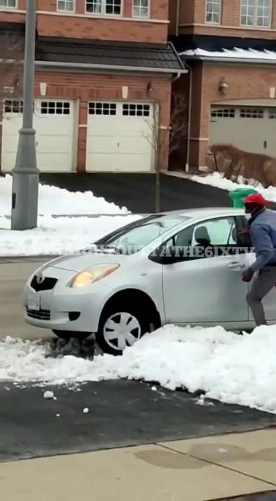

这个贼智商真成问题。车轮还转着的时候，他能跑到车轮前方清理积雪，就没想过万一车能动起来，直接会从他身上压过去？
@参考消息:
【#加拿大笨贼开车逃跑时被困雪堆# 被盗者反问要不要帮忙 】加拿大一小偷在门廊前偷包裹时，被屋主抓了个正着，吓得他赶紧回到车上准备逃走，没想到把车卡在了雪堆里动弹不得。
】加拿大一小偷在门廊前偷包裹时，被屋主抓了个正着，吓得他赶紧回到车上准备逃走，没想到把车卡在了雪堆里动弹不得。
于是他下车开始清理积雪，甚至想人力抬车，多次尝试依旧无济于事。屋主叫家人报警的同时，也积极出谋划策，告诉他怎么把车开出去，还问对方要不要铲子....最后警察赶到，将小偷带走。 YouTube精彩视频的微博视频
YouTube精彩视频的微博视频
于是他下车开始清理积雪，甚至想人力抬车，多次尝试依旧无济于事。屋主叫家人报警的同时，也积极出谋划策，告诉他怎么把车开出去，还问对方要不要铲子....最后警察赶到，将小偷带走。

57万次播放
03:52